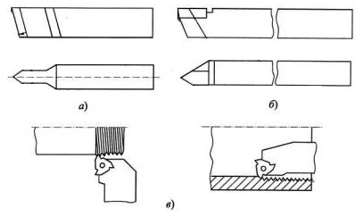
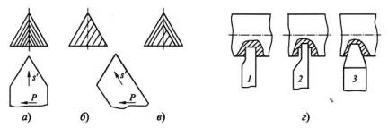
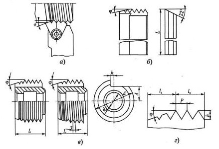

Резьбовые резцы применяются для нарезания всех видов резьб и обладают следующими достоинствами: простотой конструкции, технологичностью и универсальностью. Последнее достоинство заключается в том, что одним и тем же резцом можно нарезать на цилиндрической и конической поверхностях наружную и внутреннюю резьбы различного диаметра и шага.
Резьбовые резцы работают по методу копирования, поэтому профиль их режущих кромок должен соответствовать профилю впадины нарезаемой резьбы. С целью повышения производительности иногда используется также генераторная схема резания.
Удаление припуска в процессе резьбонарезания производится в условиях несвободного резания при большой степени деформации снимаемого материала. При этом формирование резьбы осуществляется, как правило, за несколько проходов при малых сечениях срезаемой стружки. В связи с этим производительность процесса резьбонарезания низка, поэтому резьбовые резцы в основном применяются в единичном и мелкосерийном производствах.
Являясь фасонным инструментом, резьбовые резцы могут быть трех типов: стержневые, призматические и круглые.
На рисунке представлены типовые конструкции резьбовых резцов стержневого типа: цельный из быстрорежущей стали; с напайной твердосплавной пластиной; с механическим креплением твердосплавной пластины специальной формы, применяемой для нарезания наружной и внутренней резьб.
При многопроходном нарезании остроугольной резьбы резцами образование профиля резьбы может
осуществляться по трем схемам:
а) профильной - с радиальной подачей резца;
б) генераторной - с подачей резца под углом
к оси заготовки;
в) комбинированной, состоящей из подачи под углом при черновой
обработке и радиальной подачи - при чистовой (окончательной) обработке.
Достоинством генераторной схемы является увеличение толщины срезаемого слоя за один проход в 2 раза, что обеспечивает соответствующее сокращение проходов. Правая кромка в этом случае работает как вспомогательная кромка, оставляя ступеньки на обработанной поверхности. Этот недостаток позволяет исправить применение комбинированной схемы.
При нарезании резьб с глубоким профилем, например трапецеидальных, формирование резьбы на предварительных операциях осуществляют резцами с разным профилем режущих кромок (г).
Стержневые резцы обычно имеют небольшой запас на переточку и их установка относительно заготовки связана с определенными трудностями, которые не возникают при использовании фасонных призматических и круглых резьбонарезных резцов.
Гребенки - это многониточные фасонные резцы, которые могут быть стержневыми, призматическими, круглыми. Их используют главным образом для нарезания крепежных резьб с мелким шагом, т.е. резьб с небольшой высотой профиля.
Режущая часть гребенок состоит из заборной части длиной l1 заточенной под углом φ к оси и калибрующей части l2
В начале рабочего хода гребенка имеет радиальную подачу на врезание и затем перемещается вдоль оси вращающейся заготовки с подачей на один оборот, равной шагу.